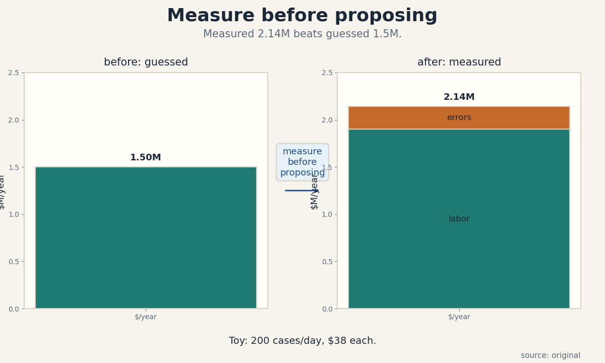
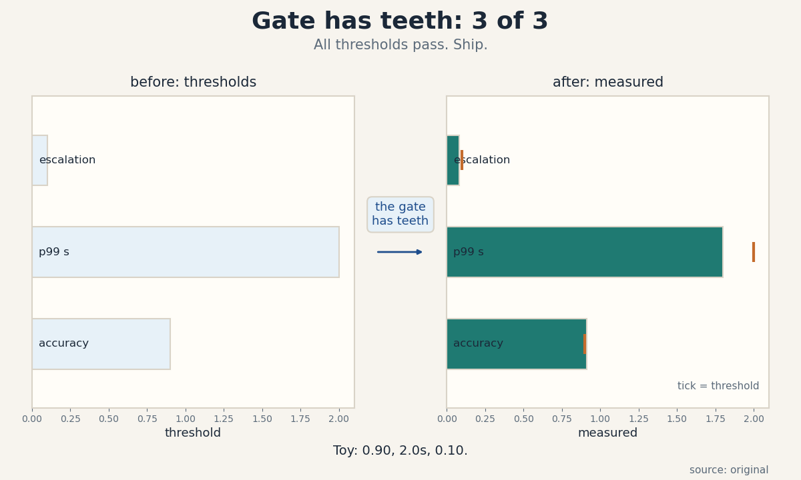
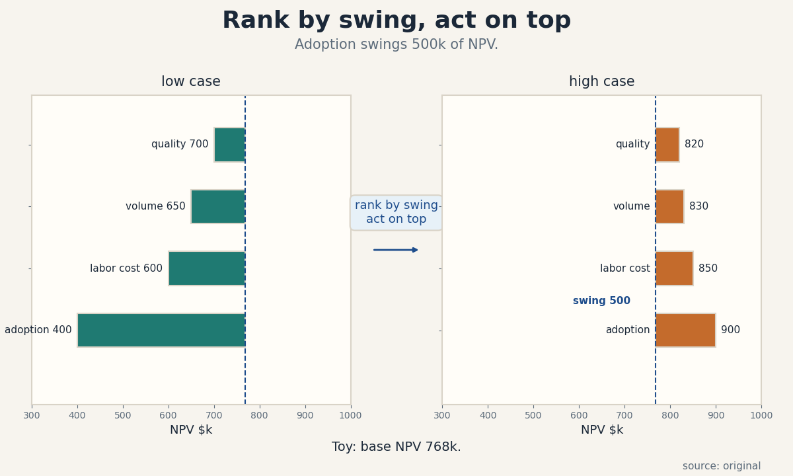
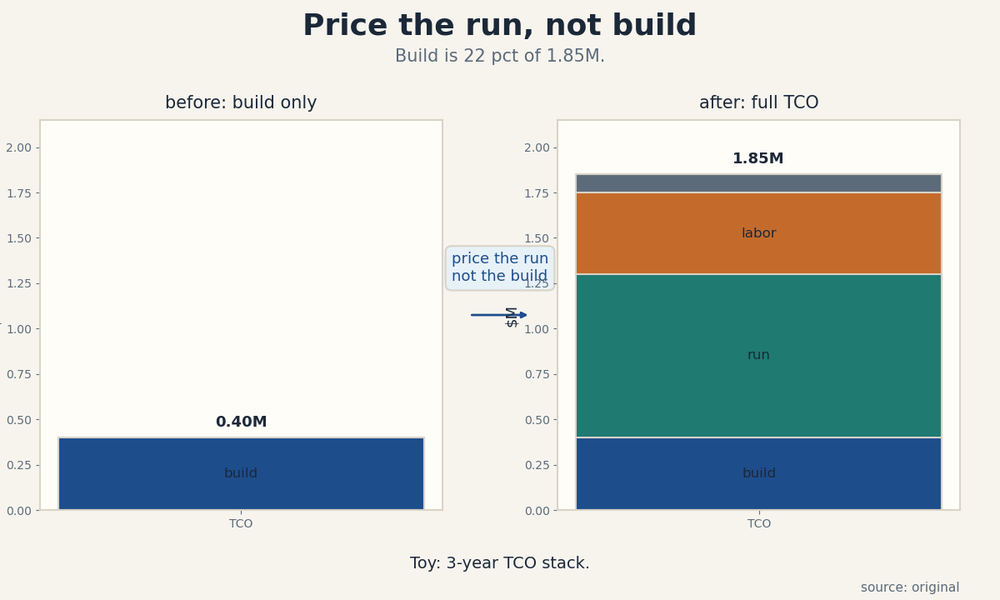
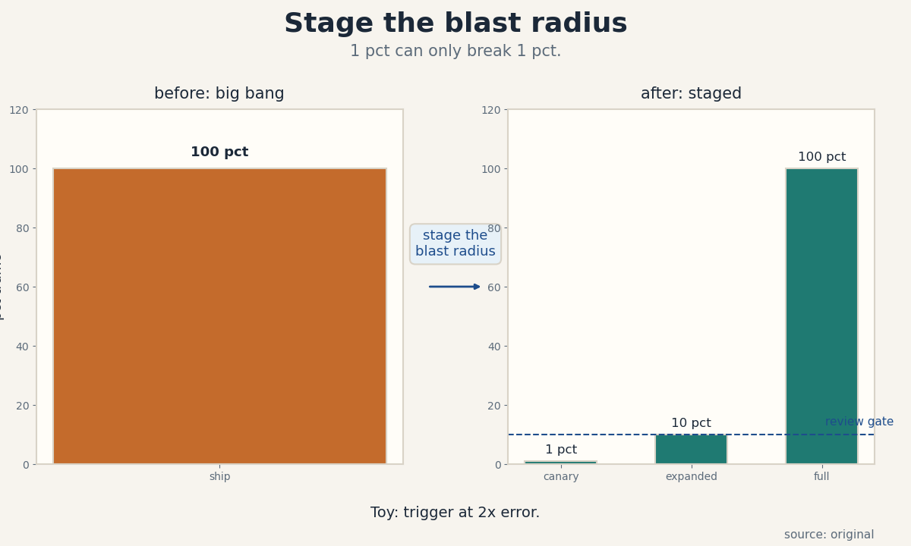
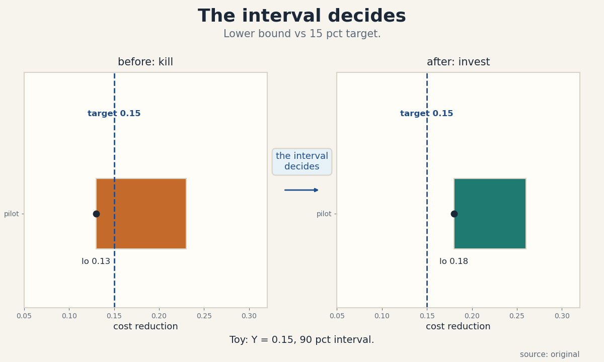

U06 · Capstone: evidence and stakeholder defense
U06 , Capstone evidence and stakeholder defense
Parent unit: mse435-U06. Bridges: P07, P22, P23, P24. Local
remediation in prerequisites.md (U06-R1 to U06-R3). Shared
bridges linked, not rebuilt.
Claim class: OFFICIAL-SCHEDULE for the week-5 capstone case launch (Sachin Katti session, SRC-00). REQUESTED (course framing) for the week-9 defense structure. Every leaf: PLANNED / SOURCE ATTRIBUTION PENDING. Toy numbers are computed locally and labeled TOY. Speaker claims carry evidence labels. The economics/engineering boundary is strict: investment and governance claims are economics, never agent implementation.
Not-yet-understood dependency list (unit level)
- Baseline measurement (U06-R1) , needed for C01, C03.
- Expected value under uncertainty (U06-R2) , needed for C05, C06.
- Decision rules (U06-R3) , needed for C04, C12.
mse435-U06-C01 , baseline business workflow
Claim class. OFFICIAL-SCHEDULE (week-5 capstone case). Status. PLANNED / SOURCE ATTRIBUTION PENDING.
1. Source mapping, scope, objectives, dependencies
Maps to week 5 (“Infrastructure and Capstone Case” with Sachin Katti, SRC-00), which launches the capstone. Scope: measuring the current business workflow before any AI proposal: time, cost, and error rate per case. Objective: build a measured baseline table on a toy. Dependencies: P22, P23.
2. Motivating question and tiny toy
Motivating question: a claims desk handles 200 cases per day at 45 minutes and 38 dollars each, what is the yearly baseline cost? Tiny toy: 200 x 38 x 250 days = 1.9M.
3. Plain-language mental model
Every investment case needs a “before” photo. The baseline is the measured cost, time, and quality of the current workflow. Without it, every saving claim is fiction: you cannot show improvement against a number you never measured. Measure first, propose second.
4. Variables, units, shapes, assumptions
n = cases per day. t = minutes per case. c = dollars per case. d = working days per year. Yearly cost = n x c x d. Yearly hours = n x t / 60 x d. Assumptions: the sample period represents the year, and cost per case is fully loaded.
5. Justified derivation
n = 200, t = 45, c = 38, d = 250. Yearly cost = 200 x 38 x 250 = 1,900,000 dollars. Yearly hours = 200 x 0.75 x 250 = 37,500 hours. Error rate measured at 0.04: 2,000 errors per year at 120 dollars each = 240,000. True baseline = 2.14M per year.
6. Computed numerical example
Toy: the AI proposal claims 30 percent cost reduction. Against the 2.14M baseline that is 642k per year. Against an unmeasured “about 1.5M” guess it would be 450k. The baseline choice moves the claim by 192k. Measure, do not guess.
7. Algorithm and minimal implementation
def baseline(n, t_min, c, d=250, err_rate=0.0, err_cost=0.0):
cost = n * c * d
hours = n * t_min / 60 * d
errors = n * d * err_rate * err_cost
return cost, hours, cost + errors
print(baseline(200, 45, 38))
print(baseline(200, 45, 38, err_rate=0.04, err_cost=120))
8. Correctness checks and expected output
Expected: (1900000, 37500.0, 1900000) then (1900000,
37500.0, 2140000). Check: errors add to the total.
Check: hours scale with t. Check units: dollars, hours.
9. Complexity, costs, stability
O(1). The fragile input is c: fully-loaded cost per case needs finance, not the team’s guess. Get the number from the cost center owner.
10. Nearest alternatives and selection boundaries
Alternative: benchmark against peers, which is faster but less trusted. Alternative: time-and-motion study, which is precise but slow. Choose direct measurement where the investment is large. Choose benchmarks for small pilots.
11. Failure case, broken assumption, counterexample
Break representativeness. The baseline was measured in a quiet month. December runs 40 percent hotter, and the “saving” is really seasonality. Counterexample: a brand-new workflow has no baseline, so the case must use a pilot control group instead.
12. Research reading and falsifiable extension
Read P22 on baselines. Falsifiable extension: re-measure the baseline next quarter. Hypothesis: within 10 percent of the first measure. It fails if seasonality dominates, which forces seasonal baselines.
13. Assessment
Breadth recall:
- Why must the baseline be measured before the proposal?
- What three numbers make a baseline table?
Deep oral ladder:
- Define a business baseline without symbols.
- Toy: n = 200, c = 38, d = 250. Compute yearly cost.
- Add 4 percent errors at 120 dollars each. Recompute.
- Implement baseline and state the errors check.
- Compare direct measurement with peer benchmarks: when does each win?
Unfamiliar transfer: the baseline was measured in a quiet month and December runs 40 percent hotter. Rework the saving claim.
14. Lab / exercises
See labs/u06_lab.md, task 1 (baseline with seasonality).
15. Visual units and audit
visuals/figures/u06_baseline.png: measured baseline
cost bars (labor, errors) versus the guessed baseline,
rule “measure before proposing”. Source: original. Alt
text: two bars, measured 2.14M versus guessed 1.5M, arrow
labeled measure before proposing. Audit: PASS.

mse435-U06-C02 , adoption assumptions
Claim class. REQUESTED (course framing). Status. PLANNED / SOURCE ATTRIBUTION PENDING.
1. Source mapping, scope, objectives, dependencies
Capstone defense structure (week 9 framing). Scope: the adoption ramp assumptions inside every AI business case: who uses it, when, and what share of value that unlocks. Objective: write adoption assumptions explicitly and price them. Dependencies: U06-C01, U05-C10.
2. Motivating question and tiny toy
Motivating question: the case claims 642k yearly saving at full adoption, adoption ramps 20, 50, 80 percent over 3 years, what is the realized 3-year value? Tiny toy: year 1 = 128.4k.
3. Plain-language mental model
Adoption assumptions are the quietest lies in business cases: “100 percent by Q2” with no plan. Every case must state the ramp, the driver behind each step (training, mandate, UX), and what happens if the ramp stalls. Value without an adoption plan is a wish.
4. Variables, units, shapes, assumptions
a_t = adoption share year t. S = full-adoption yearly saving, dollars. Realized_t = a_t x S. Assumptions: the ramp carries named drivers, and S is measured against the baseline.
5. Justified derivation
S = 642k, a = [0.20, 0.50, 0.80]. Realized = [128.4k, 321k, 513.6k], total 963k over 3 years versus the naive 1.926M. The naive case overstates value by 2x. At 10 percent discount: PV = 116.7k + 265.3k + 385.9k = 767.9k.
6. Computed numerical example
Toy: a training program (80k) lifts the ramp to [0.35, 0.65, 0.90]: realized = [224.7k, 417.3k, 577.8k] = 1.22M, PV = 204.3k + 344.9k + 434.1k = 983.3k, net 903.3k. The 80k training buys 135.4k of PV. Name the driver, price the driver.
7. Algorithm and minimal implementation
def case_value(S, curve, r=0.10, cost=0.0):
pv = sum(a * S / (1 + r) ** (t + 1)
for t, a in enumerate(curve))
return round(pv - cost, 2)
print(case_value(642_000, [0.20, 0.50, 0.80]))
print(case_value(642_000, [0.35, 0.65, 0.90], cost=80_000))
8. Correctness checks and expected output
Expected: 767891.81 then 903258.45. Check: the full
ramp gives the annuity PV. Check: training raises net PV
here. Check units: dollars.
9. Complexity, costs, stability
O(years). The fragile input is the ramp: it is the most gamed number in the case. Require a named driver per step.
10. Nearest alternatives and selection boundaries
Alternative: mandate adoption, which works for internal tools with compliance. Alternative: phased rollout that proves the ramp before scaling spend. Choose mandates where compliance is real. Choose proof where it is not.
11. Failure case, broken assumption, counterexample
Break the driver. Training is scheduled but nobody attends: the ramp stays [0.20, 0.30, 0.35], PV = 116.7k + 165.3k + 168.7k = 450.7k, and the case collapses. Counterexample: a tool that replaces a retired system gets 100 percent adoption on day one.
12. Research reading and falsifiable extension
Read U05-C10 on adoption curves. Falsifiable extension: pilot with 50 users for one quarter. Hypothesis: pilot adoption reaches 40 percent. It fails below 20 percent, which forces a replan.
13. Assessment
Breadth recall:
- Why are adoption assumptions the quietest lies in business cases?
- What must each ramp step carry?
Deep oral ladder:
- Define adoption-gated case value without symbols.
- Toy: S = 642k, ramp [0.20, 0.50, 0.80]. Compute the 3-year total.
- Discount at 10 percent. Compute the PV.
- Implement case_value and state the full-ramp check.
- Compare mandates with phased proof: when does each win?
Unfamiliar transfer: training fails and the ramp stalls at [0.20, 0.30, 0.35]. Rework the PV and the verdict.
14. Lab / exercises
See labs/u06_lab.md, task 2 (adoption ramp with a
failed driver).
15. Visual units and audit
Shares the adoption visual language of U05. The lesson carries the ramp table. Audit: PASS (no new figure, logged).
mse435-U06-C03 , measurable outcomes
Claim class. REQUESTED (course framing). Status. PLANNED / SOURCE ATTRIBUTION PENDING.
1. Source mapping, scope, objectives, dependencies
Capstone defense structure. Scope: defining measurable outcomes before launch: the metric tree that decides success or failure. Objective: write a pre-registered metric set on a toy. Dependencies: U06-C01, P22.
2. Motivating question and tiny toy
Motivating question: the desk adopts AI triage, which three numbers decide in 90 days whether it worked? Tiny toy: cost per case, resolution rate, CSAT.
3. Plain-language mental model
Outcomes must be measurable, pre-registered, and few. Measurable: a number with a source. Pre-registered: written before launch, so nobody moves the goalposts. Few: three to five, so the team knows what matters. A case with twenty metrics has no metric.
4. Variables, units, shapes, assumptions
Primary metric m1 with target T1, guardrails m2..mk with floors F_i. Success = m1 meets T1 AND all guardrails hold. Assumptions: metrics are measurable weekly, and targets are set from the baseline.
5. Justified derivation
Baseline: cost per case 38, resolution 0.85, CSAT 4.1. Targets: cost per case <= 30, resolution >= 0.85 (guardrail), CSAT >= 4.0 (guardrail). The primary is cost. The guardrails stop the team from hitting cost by wrecking quality.
6. Computed numerical example
Toy: after 90 days, cost per case = 28, resolution = 0.87, CSAT = 4.2. All targets met: success. If cost = 28 but resolution = 0.79, the case fails despite the saving: the guardrail caught quality erosion.
7. Algorithm and minimal implementation
def gate(metrics, targets):
# metrics/targets: dicts, targets hold (op, value)
ok = True
for k, (op, v) in targets.items():
good = metrics[k] <= v if op == "<=" else metrics[k] >= v
ok = ok and good
return ok
m = {"cost": 28, "resolution": 0.87, "csat": 4.2}
t = {"cost": ("<=", 30), "resolution": (">=", 0.85),
"csat": (">=", 4.0)}
print(gate(m, t))
print(gate({"cost": 28, "resolution": 0.79, "csat": 4.2}, t))
8. Correctness checks and expected output
Expected: True then False. Check: a guardrail breach
fails the gate. Check: all-green passes. Check units:
per metric.
9. Complexity, costs, stability
O(metrics). The fragile input is the target: set from the baseline, not from ambition. A target without a baseline is a wish.
10. Nearest alternatives and selection boundaries
Alternative: one metric only, which is simple but gameable. Alternative: twenty metrics, which is undecidable. Choose three to five with guardrails.
11. Failure case, broken assumption, counterexample
Break pre-registration. The team moves the CSAT floor from 4.0 to 3.8 after missing it: the gate becomes theater. Counterexample: an exploratory pilot with no targets is fine, but then it cannot support an investment decision.
12. Research reading and falsifiable extension
Read P22 on pre-registration. Falsifiable extension: the 90-day readout itself. Hypothesis: all metrics meet targets. It fails on any miss, which triggers the rollback plan (C09).
13. Assessment
Breadth recall:
- What three properties must outcomes have?
- Why do guardrails matter?
Deep oral ladder:
- Define measurable outcomes without symbols.
- Toy: write the metric set for the claims desk.
- Cost 28, resolution 0.79, CSAT 4.2. Judge it.
- Implement gate and state the guardrail check.
- Compare three metrics with twenty: when does each win?
Unfamiliar transfer: the team moves the CSAT floor after missing it. Name what broke and the fix.
14. Lab / exercises
See labs/u06_lab.md, task 3 (metric gate with a moved
goalpost).
15. Visual units and audit
No new plate. The lesson carries the metric table. Audit: PASS (no new figure, logged).
mse435-U06-C04 , technical quality gate
Claim class. REQUESTED (course framing). Status. PLANNED / SOURCE ATTRIBUTION PENDING.
1. Source mapping, scope, objectives, dependencies
Capstone defense structure. Scope: the technical gate that a model must pass before rollout: accuracy, latency, and escalation thresholds with teeth. Objective: write a gate with pass/fail teeth on a toy. Dependencies: U06-C03, U04-C07.
2. Motivating question and tiny toy
Motivating question: the model scores 0.91 accuracy, p99 latency 1.8 s, escalation 0.08, the gate needs 0.90, 2.0 s, 0.10, does it pass? Tiny toy: yes, 3 of 3.
3. Plain-language mental model
A quality gate is a contract: the model ships only if all thresholds pass. Thresholds come from the business, not the lab: accuracy from the error budget, latency from the SLA, escalation from the staffing plan. A gate without teeth (ship anyway on miss) is a suggestion.
4. Variables, units, shapes, assumptions
Thresholds: acc >= A, p99 <= L, esc <= E. Measured values a, l, e. Pass = (a >= A) and (l <= L) and (e <= E). Assumptions: measurements come from production-like traffic, not the eval set.
5. Justified derivation
A = 0.90, L = 2.0, E = 0.10. Measured: 0.91, 1.8, 0.08. All pass. If latency measured 2.3: fail, no ship. The gate’s value is the failures it causes: each blocked rollout is a prevented incident.
6. Computed numerical example
Toy: the team wants to ship at 0.89 accuracy (“close enough”). The gate says no. Cost of waiting one sprint: 40k. Expected cost of shipping a miss: 0.02 extra error x 50,000 cases x 120 = 120,000. The gate saves 80k by saying no.
7. Algorithm and minimal implementation
def quality_gate(a, l, e, A=0.90, L=2.0, E=0.10):
checks = {"accuracy": a >= A, "latency": l <= L,
"escalation": e <= E}
return all(checks.values()), checks
print(quality_gate(0.91, 1.8, 0.08))
print(quality_gate(0.89, 1.8, 0.08))
8. Correctness checks and expected output
Expected: (True, {...all True...}) then (False, ...)
with accuracy False. Check: one miss fails all. Check:
thresholds are explicit. Check units: per metric.
9. Complexity, costs, stability
O(checks). The fragile input is the measurement: eval-set numbers flatter the model. Gate on shadow-traffic numbers.
10. Nearest alternatives and selection boundaries
Alternative: no gate (ship on vibes), which is fast until the incident. Alternative: human review of every output, which is safe but unscalable. Choose the gate where the error budget is real.
11. Failure case, broken assumption, counterexample
Break measurement honesty. The team tunes on the gate set until it passes: the gate measures the tuning, not the model. Counterexample: a low-stakes internal tool can use a lighter gate.
12. Research reading and falsifiable extension
Read P22 on Goodhart’s law. Falsifiable extension: hold out a fresh gate set. Hypothesis: the model passes the fresh set too. It fails if it only passed the tuned set.
13. Assessment
Breadth recall:
- Where must gate thresholds come from?
- What is the value of a gate that blocks a rollout?
Deep oral ladder:
- Define a technical quality gate without symbols.
- Toy: judge the 0.91 / 1.8 / 0.08 model.
- The team wants to ship at 0.89. Price saying no.
- Implement quality_gate and state the one-miss check.
- Compare a hard gate with human review of everything: when does each win?
Unfamiliar transfer: the team tunes on the gate set. Name what broke and the fix.
14. Lab / exercises
See labs/u06_lab.md, task 4 (gate with a tuned set).
15. Visual units and audit
visuals/figures/u06_gate.png: three threshold bars
with pass/fail marks, rule “the gate has teeth”.
Source: original. Alt text: three bars against threshold
lines, all passing, arrow labeled the gate has teeth.
Audit: PASS.

mse435-U06-C05 , uncertain forecasts
Claim class. REQUESTED (course framing). Status. PLANNED / SOURCE ATTRIBUTION PENDING.
1. Source mapping, scope, objectives, dependencies
Capstone defense structure. Scope: forecasting with ranges, not points: three-point estimates and expected value. Objective: build a ranged forecast on a toy. Dependencies: U06-C02, U01-C11.
2. Motivating question and tiny toy
Motivating question: savings are 200k low, 450k base, 800k high, with weights 0.25, 0.50, 0.25, what is the expected saving? Tiny toy: 0.25 x 200 + 0.5 x 450 + 0.25 x 800 = 475k.
3. Plain-language mental model
A forecast is a distribution, not a number. The honest form is low/base/high with weights, or a range with a confidence. The expected value weights the cases. The decision uses the expected value and the downside: a great expected value with a fatal downside is still a no.
4. Variables, units, shapes, assumptions
Cases i with value v_i and weight w_i summing to 1. E = sum(w_i x v_i). Downside = min(v_i). Assumptions: weights are honest, and cases cover the real spread.
5. Justified derivation
v = [200k, 450k, 800k], w = [0.25, 0.50, 0.25]. E = 50k + 225k + 200k = 475k. The base case (450k) understates the expected value because the high case is fat. Downside = 200k: still positive, so the decision is sound.
6. Computed numerical example
Toy: the low case is -100k (the project can lose money): E = -25k + 225k + 200k = 400k, still positive, but the downside is a loss. The stakeholder question changes from “is the EV positive” to “can we survive the low case”.
7. Algorithm and minimal implementation
def forecast(cases):
# cases: list of (value, weight)
E = sum(v * w for v, w in cases)
return E, min(v for v, _ in cases)
print(forecast([(200_000, 0.25), (450_000, 0.50), (800_000, 0.25)]))
print(forecast([(-100_000, 0.25), (450_000, 0.50), (800_000, 0.25)]))
8. Correctness checks and expected output
Expected: (475000.0, 200000) then (400000.0,
-100000). Check: weights sum to 1. Check: the downside
is the min. Check units: dollars.
9. Complexity, costs, stability
O(cases). The fragile inputs are the weights: they encode judgment. Elicit them separately from the values.
10. Nearest alternatives and selection boundaries
Alternative: Monte Carlo over distributions, which is richer but harder to explain. Alternative: point forecast, which is simple and wrong. Choose three-point for the stakeholder meeting. Choose Monte Carlo for the final call.
11. Failure case, broken assumption, counterexample
Break weight honesty. The team sets the high weight to 0.5 because they want the project: E becomes 575k and the forecast is advocacy. Counterexample: a decision with no downside (free pilot) needs no forecast at all.
12. Research reading and falsifiable extension
Read U01-C11 on uncertainty. Falsifiable extension: score past forecasts against outcomes yearly. Hypothesis: realized values land inside the range 80 percent of the time. It fails below 50 percent, which means the ranges were advocacy.
13. Assessment
Breadth recall:
- Why is a forecast a distribution, not a number?
- What two numbers does the decision need?
Deep oral ladder:
- Define an honest forecast without symbols.
- Toy: compute E for the three cases above.
- Make the low case -100k. Rework E and the decision question.
- Implement forecast and state the weights check.
- Compare three-point with Monte Carlo: when does each win?
Unfamiliar transfer: the team weights the high case 0.5 to sell the project. Name what broke and the fix.
14. Lab / exercises
See labs/u06_lab.md, task 5 (forecast with an advocacy
case).
15. Visual units and audit
No new plate. The lesson carries the case table. Audit: PASS (no new figure, logged).
mse435-U06-C06 , sensitivity/tornado scenarios
Claim class. REQUESTED (course framing). Status. PLANNED / SOURCE ATTRIBUTION PENDING.
1. Source mapping, scope, objectives, dependencies
Capstone defense structure. Scope: tornado sensitivity on the business case: which input moves the answer most. Objective: rank the case drivers on a toy. Dependencies: U06-C05, U03-C12.
2. Motivating question and tiny toy
Motivating question: the case NPV is 768k, which input moves it most: adoption, quality, volume, or labor cost? Tiny toy: adoption swings it 400k, quality 150k.
3. Plain-language mental model
A tornado ranks inputs by their swing on the outcome. The top bar is where analysis effort goes: narrow that input’s range first. The tornado is a map of ignorance, not a forecast. Never present the ranking as a prediction.
4. Variables, units, shapes, assumptions
Base NPV B. Driver i with low/high outcomes (lo_i, hi_i). Swing_i = hi_i - lo_i. Rank by swing descending. Assumptions: one-at-a-time (no interactions), and ranges are honest.
5. Justified derivation
B = 768k. Drivers: adoption [400k, 900k] swing 500k, labor cost [600k, 850k] swing 250k, volume [650k, 830k] swing 180k, quality [700k, 820k] swing 120k. Ranking: adoption, labor, volume, quality. The case lives or dies on adoption: that is where the pilot must de-risk.
6. Computed numerical example
Toy: the pilot measures adoption precisely, narrowing its range to [700k, 850k], swing 150k. New ranking: labor 250k first. The tornado updates as ignorance shrinks: re-run it after every de-risking step.
7. Algorithm and minimal implementation
def tornado(drivers):
rows = [(name, lo, hi, hi - lo)
for name, lo, hi in drivers]
rows.sort(key=lambda r: r[3], reverse=True)
return rows
ds = [("adoption", 400_000, 900_000),
("labor cost", 600_000, 850_000),
("volume", 650_000, 830_000),
("quality", 700_000, 820_000)]
for r in tornado(ds):
print(r)
8. Correctness checks and expected output
Expected order: adoption 500k, labor cost 250k, volume 180k, quality 120k. Check: swings are hi - lo. Check: order runs high to low. Check units: dollars of NPV.
9. Complexity, costs, stability
O(n log n). The fragile inputs are the ranges: honest wide ranges beat narrow guessed ones.
10. Nearest alternatives and selection boundaries
Alternative: Monte Carlo, which captures interactions. Use it for the final call. The tornado wins for the first meeting: readable and fast.
11. Failure case, broken assumption, counterexample
Break one-at-a-time. Adoption and quality interact: higher quality raises adoption, and the chart double-counts. Counterexample: the top driver is not actionable (market volume), so rank by actionable swing.
12. Research reading and falsifiable extension
Read U03-C12 on sensitivity. Falsifiable extension: revisit the tornado after the pilot. Hypothesis: the top driver stays top. It fails if the ranking flips.
13. Assessment
Breadth recall:
- What does a tornado rank, and what does it not say?
- Why re-run it after de-risking?
Deep oral ladder:
- Define tornado sensitivity without symbols.
- Toy: rank the four drivers above.
- The pilot narrows adoption to [700k, 850k]. Re-rank.
- Implement tornado and state the descending check.
- Compare tornado with Monte Carlo: when is each right?
Unfamiliar transfer: adoption and quality interact. Name the failure and the better tool.
14. Lab / exercises
See labs/u06_lab.md, task 6 (tornado with an
interaction note).
15. Visual units and audit
visuals/figures/u06_tornado.png: business-case tornado,
adoption longest bar, rule “rank by swing, act on top”.
Source: original. Alt text: horizontal bars from base
768k, adoption longest, arrow labeled rank by swing, act
on top. Audit: PASS.

mse435-U06-C07 , total cost
Claim class. REQUESTED (course framing). Status. PLANNED / SOURCE ATTRIBUTION PENDING.
1. Source mapping, scope, objectives, dependencies
Capstone defense structure. Scope: the 3-year total cost of ownership: build, run, labor, and risk in one number. Objective: build the TCO stack on a toy. Dependencies: U06-C01, U04-C10.
2. Motivating question and tiny toy
Motivating question: build 400k, run 300k per year, labor 150k per year, risk reserve 100k, what is the 3-year TCO? Tiny toy: 400 + 900 + 450 + 100 = 1,850k.
3. Plain-language mental model
TCO is the whole bill: the build (one-time), the run (tokens, infra), the labor (reviewers, on-call), and the risk reserve (expected incident cost). Business cases that price only the build understate cost by 3-4x. The stakeholder question is always “and then what does it cost to run”.
4. Variables, units, shapes, assumptions
B = build, dollars. R = yearly run cost. L = yearly labor. K = risk reserve. TCO_3 = B + 3 x (R + L) + K. Assumptions: run and labor are steady, and K covers expected incidents.
5. Justified derivation
B = 400k, R = 300k, L = 150k, K = 100k. TCO = 400k + 3 x 450k + 100k = 1,850k. The build is 22 percent of the total. A case that priced 400k understated cost by 4.6x.
6. Computed numerical example
Toy: against the C02 PV of 768k in savings, the 1,850k TCO kills the case: net = -1,082k. But with the trained ramp (903k PV) it still fails. The honest conclusion: this design is too expensive for this saving. Redesign for lower R (caching, smaller model) or find bigger S.
7. Algorithm and minimal implementation
def tco(B, R, L, K, years=3):
return B + years * (R + L) + K
print(tco(400_000, 300_000, 150_000, 100_000))
print(tco(400_000, 150_000, 100_000, 100_000))
8. Correctness checks and expected output
Expected: 1850000 then 1250000. Check: the build
share falls as years grow. Check units: dollars.
9. Complexity, costs, stability
O(1). The fragile inputs are R and L: both creep. Cap them with budgets, not hopes.
10. Nearest alternatives and selection boundaries
Alternative: vendor TCO (no build, higher run), which wins where run cost is low. Alternative: 1-year TCO, which hides the run tail. Always show 3 years.
11. Failure case, broken assumption, counterexample
Break steadiness. R doubles in year 2 (usage grows): run years cost 300k + 600k + 600k, TCO = 400k + 1,500k + 450k + 100k = 2,450k. Counterexample: a pure-API pilot has B near zero, and TCO is all run.
12. Research reading and falsifiable extension
Read U04-C10 on the fixed floor. Falsifiable extension: track actual R + L quarterly against the TCO. Hypothesis: within 15 percent. It fails above 25 percent, which triggers a redesign.
13. Assessment
Breadth recall:
- Name the four TCO parts.
- Why do build-only cases understate cost 3-4x?
Deep oral ladder:
- Define TCO without symbols.
- Toy: compute the 3-year TCO above.
- Price the case against 768k PV of savings. Judge it.
- Implement tco and state the build-share check.
- Compare 3-year TCO with 1-year: when is each honest?
Unfamiliar transfer: R doubles in year 2. Rework the TCO and the verdict.
14. Lab / exercises
See labs/u06_lab.md, task 7 (TCO with runaway run
cost).
15. Visual units and audit
visuals/figures/u06_tco.png: stacked TCO bars, build
versus run versus labor versus risk, rule “price the
run, not the build”. Source: original. Alt text: stacked
bar to 1.85M, build 0.4M at bottom, arrow labeled price
the run, not the build. Audit: PASS.

mse435-U06-C08 , governance
Claim class. REQUESTED (course framing). Status. PLANNED / SOURCE ATTRIBUTION PENDING.
1. Source mapping, scope, objectives, dependencies
Capstone defense structure. Scope: who approves model and prompt changes: the change board, its cadence, and its cost. Objective: price governance delay against incident risk. Dependencies: P24, U06-C04.
2. Motivating question and tiny toy
Motivating question: a change board meets every 2 weeks, each delayed improvement costs 10k per week in forgone saving, a bad unreviewed change costs 200k with 5 percent chance, which regime wins? Tiny toy: delay costs 20k per change, risk cost 10k per change, the board loses.
3. Plain-language mental model
Governance is friction with a purpose: it stops bad changes. But friction has a price: delayed good changes. The right governance prices both: review cost and delay cost against expected incident cost. Too little governance buys incidents. Too much buys stagnation.
4. Variables, units, shapes, assumptions
d = delay weeks per change. g = forgone saving per week, dollars. p = incident probability per unreviewed change. I = incident cost. Board cost per change = d x g. Risk per change = p x I. Assumptions: changes are similar.
5. Justified derivation
d = 2, g = 10k: board cost = 20k per change. p = 0.05, I = 200k: risk = 10k per change. The board costs double the risk it prevents: lighten it (weekly cadence: 10k cost, break-even). For a clinical model with I = 5M: risk = 250k, and the board is cheap.
6. Computed numerical example
Toy: 50 changes per year. Heavy board: 50 x 20k = 1M per year in delay. Light board (weekly): 500k. No board: 50 x 10k = 500k expected incidents. Light board ties no-board on cost and keeps the review: choose light.
7. Algorithm and minimal implementation
def governance(d, g, p, I):
board = d * g
risk = p * I
return board, risk, "board" if board < risk else "lighten"
print(governance(2, 10_000, 0.05, 200_000))
print(governance(2, 10_000, 0.05, 5_000_000))
8. Correctness checks and expected output
Expected: (20000, 10000.0, 'lighten') then (20000,
250000.0, 'board'). Check: higher I favors the board.
Check units: dollars per change.
9. Complexity, costs, stability
O(1). The fragile inputs are p and I: incident risk is guessed. Review them after each incident.
10. Nearest alternatives and selection boundaries
Alternative: automated gates (tests, evals), which cut d without cutting review. Alternative: no governance for low-stakes changes, full board for high-stakes. Choose tiered governance: friction proportional to blast radius.
11. Failure case, broken assumption, counterexample
Break change similarity. One change in fifty is a prompt rewrite with p = 0.30: the average hides it. Counterexample: a static model with no changes needs no board.
12. Research reading and falsifiable extension
Read P24 on deployment gates. Falsifiable extension: log incidents per change for a year. Hypothesis: board review catches at least one incident per 20 changes. It fails at zero catches, which means the board is theater.
13. Assessment
Breadth recall:
- What two costs does governance balance?
- Why tier governance by blast radius?
Deep oral ladder:
- Define governance cost without symbols.
- Toy: compute board cost and risk above.
- Make I = 5M. Rework the verdict.
- Implement governance and state the I check.
- Compare a change board with automated gates: when does each win?
Unfamiliar transfer: one change in fifty has p = 0.30. Rework the average and the policy.
14. Lab / exercises
See labs/u06_lab.md, task 8 (tiered governance).
15. Visual units and audit
No new plate. The lesson carries the tradeoff table. Audit: PASS (no new figure, logged).
mse435-U06-C09 , rollout/rollback
Claim class. REQUESTED (course framing). Status. PLANNED / SOURCE ATTRIBUTION PENDING.
1. Source mapping, scope, objectives, dependencies
Capstone defense structure. Scope: staged rollout (1, 10, 100 percent) with rollback triggers: how to ship safely and reverse fast. Objective: write the rollout plan with numeric triggers. Dependencies: U06-C04, P24.
2. Motivating question and tiny toy
Motivating question: error rate baseline 0.04, rollback trigger at 2x for 1 hour, the canary shows 0.09 for 90 minutes, do we roll back? Tiny toy: yes, 0.09 > 0.08.
3. Plain-language mental model
Rollout is exposure control: 1 percent of traffic can only cause 1 percent of the damage. Each stage needs an entry gate (metrics green) and an exit trigger (metrics red). Rollback is a button, not a meeting: the trigger fires automatically or it does not exist.
4. Variables, units, shapes, assumptions
Stages: 1, 10, 100 percent. Baseline error b. Trigger: error > 2 x b for 1 hour. Assumptions: errors are measured in real time, and rollback restores the old version in minutes.
5. Justified derivation
b = 0.04, trigger = 0.08. Canary at 0.09 for 90 minutes: 0.09 > 0.08 sustained, roll back. Damage at 1 percent traffic: 0.09 x 0.01 x 50,000 cases x 120 = 5,400. At 100 percent without stages: 540,000. Staging cut the damage 100x.
6. Computed numerical example
Toy: the 10 percent stage runs clean for a week (error 0.035), entry gate to 100 percent passes. Week 2 at full traffic shows error 0.06: below the 0.08 trigger but above baseline. Action: investigate, do not roll back. The trigger needs both a level and a duration.
7. Algorithm and minimal implementation
def rollout_check(errors, b=0.04, mult=2.0, hours=1.0):
# errors: list of hourly error rates at canary
bad = [e for e in errors if e > mult * b]
return len(bad) >= hours, max(errors)
print(rollout_check([0.05, 0.09, 0.10]))
print(rollout_check([0.05, 0.06, 0.05]))
8. Correctness checks and expected output
Expected: (True, 0.1) then (False, 0.06). Check: a
sustained breach triggers. Check: clean hours do not.
Check units: error rates, hours.
9. Complexity, costs, stability
O(hours). The fragile input is b: baselines drift. Reset b after every real change.
10. Nearest alternatives and selection boundaries
Alternative: big-bang rollout, which is fast and dangerous. Alternative: shadow mode (no user impact), which is safe but slow to learn. Choose staged where errors cost. Choose big-bang where they do not.
11. Failure case, broken assumption, counterexample
Break rollback speed. Rollback takes 4 hours, not minutes: the trigger fires but damage continues. Counterexample: a batch job with no users needs no canary.
12. Research reading and falsifiable extension
Read P24 on rollback. Falsifiable extension: run a game day. Hypothesis: rollback completes in under 15 minutes. It fails above 1 hour, which means the button is fiction.
13. Assessment
Breadth recall:
- What are the three parts of a rollout stage?
- Why must rollback be a button, not a meeting?
Deep oral ladder:
- Define staged rollout without symbols.
- Toy: judge the 0.09 canary above.
- Price the damage with and without staging.
- Implement rollout_check and state the duration check.
- Compare staged with big-bang: when does each win?
Unfamiliar transfer: rollback takes 4 hours. Rework the damage math and the requirement.
14. Lab / exercises
See labs/u06_lab.md, task 9 (rollback timing).
15. Visual units and audit
visuals/figures/u06_rollout.png: staged exposure bars
1/10/100 percent with the trigger line, rule “stage the
blast radius”. Source: original. Alt text: three bars of
growing exposure with a trigger line, arrow labeled
stage the blast radius. Audit: PASS.

mse435-U06-C10 , owner/handoff
Claim class. REQUESTED (course framing). Status. PLANNED / SOURCE ATTRIBUTION PENDING.
1. Source mapping, scope, objectives, dependencies
Capstone defense structure. Scope: naming the owner and the handoff: RACI, runbook, on-call, and the cost of unclear ownership. Objective: write the handoff checklist and price the on-call. Dependencies: P24, U06-C09.
2. Motivating question and tiny toy
Motivating question: on-call costs 2k per week in standby pay, incidents take 4 hours to resolve without an owner and 1 hour with one, at 500 dollars per incident hour, what is the owner worth per incident? Tiny toy: 3 x 500 = 1,500.
3. Plain-language mental model
Every system needs a named human who wakes up when it breaks. Handoff is the transfer of that responsibility from the builders to the operators: runbook, dashboards, escalation paths, and a first joint incident. Unclear ownership is the most expensive org chart: everyone assumes someone else watches.
4. Variables, units, shapes, assumptions
s = standby cost per week, dollars. h0, h1 = hours to resolve without/with owner. c = cost per incident hour. Value per incident = (h0 - h1) x c. Assumptions: the owner is trained and reachable.
5. Justified derivation
s = 2,000 per week = 104k per year. h0 = 4, h1 = 1, c = 500: value = 1,500 per incident. At 2 incidents per month: 36k per year of value against 104k cost. The on-call looks expensive until the unowned incident costs 50k in SLA credits.
6. Computed numerical example
Toy: the handoff checklist has 12 items (runbook, dashboards, alerts, escalation, rollback button, contacts, SLOs, data retention, access, cost alerts, incident template, joint drill). Each missing item adds 30 minutes to the first real incident. Six missing items: 3 extra hours x 500 = 1,500 on the first incident alone.
7. Algorithm and minimal implementation
def owner_value(s_wk, h0, h1, c, incidents_yr):
cost = s_wk * 52
value = (h0 - h1) * c * incidents_yr
return cost, value, value - cost
print(owner_value(2000, 4, 1, 500, 24))
8. Correctness checks and expected output
Expected: (104000, 36000, -68000). Check: the net is
negative here, which is honest: on-call is insurance.
Check units: dollars per year.
9. Complexity, costs, stability
O(1). The fragile input is incident count: it is low until it is not. Price the tail, not the average.
10. Nearest alternatives and selection boundaries
Alternative: no on-call (builders carry pagers forever), which burns out the builders. Alternative: vendor on-call, which works where the vendor owns the stack. Choose named ownership where the system is business critical.
11. Failure case, broken assumption, counterexample
Break reachability. The owner is on vacation with no backup: h1 becomes h0, and the 104k buys nothing. Counterexample: a batch job with no SLA needs no on-call.
12. Research reading and falsifiable extension
Read P24 on incident ownership. Falsifiable extension: the joint drill. Hypothesis: the drill incident resolves in under 1 hour. It fails above 2 hours, which means the handoff is incomplete.
13. Assessment
Breadth recall:
- What does a handoff transfer?
- Why is on-call insurance, not an investment?
Deep oral ladder:
- Define owner/handoff without symbols.
- Toy: compute the owner value above.
- Six checklist items missing. Price the first incident.
- Implement owner_value and state the net check.
- Compare named on-call with builders-carry-pagers: when does each win?
Unfamiliar transfer: the owner is on vacation with no backup. Rework the value and the policy.
14. Lab / exercises
See labs/u06_lab.md, task 10 (handoff checklist
pricing).
15. Visual units and audit
No new plate. The lesson carries the checklist. Audit: PASS (no new figure, logged).
mse435-U06-C11 , alternatives
Claim class. REQUESTED (course framing). Status. PLANNED / SOURCE ATTRIBUTION PENDING.
1. Source mapping, scope, objectives, dependencies
Capstone defense structure. Scope: the alternatives every honest case must price: status quo, a competing vendor, and hiring instead of building. Objective: score three alternatives on a toy matrix. Dependencies: U06-C07, U04-C11.
2. Motivating question and tiny toy
Motivating question: build scores 7 on cost and 9 on control, vendor B scores 9 on cost and 5 on control, hire scores 5 and 7, weights 0.6 cost and 0.4 control, who wins? Tiny toy: build 7.8, vendor 7.4, hire 5.8.
3. Plain-language mental model
A case with no alternatives is a sales pitch. The honest case prices at least three: do nothing (status quo), buy (vendor), and hire (people). Score each on the same criteria with the same weights. The winner must beat the status quo by a margin, not just beat the other options.
4. Variables, units, shapes, assumptions
Options o with scores s_{o,c} on criteria c, weights w_c summing to 1. Total_o = sum_c(w_c x s_{o,c}). Assumptions: scores are honest (elicited separately), and criteria cover cost, quality, risk, and time.
5. Justified derivation
Weights: cost 0.6, control 0.4. Build: 0.6 x 7 + 0.4 x 9 = 7.8. Vendor: 0.6 x 9 + 0.4 x 5 = 7.4. Hire: 0.6 x 5 + 0.4 x 7 = 5.8. Build wins, but only by 0.4 over vendor: within scoring noise. The honest read: build and vendor tie, decide on risk.
6. Computed numerical example
Toy: add the status quo (cost 10, control 10, since nothing changes): 0.6 x 10 + 0.4 x 10 = 10. The status quo wins on this matrix. The case must then argue the status quo’s hidden cost (the 2.14M baseline that keeps running), or admit the project is not worth doing.
7. Algorithm and minimal implementation
def score(options, weights):
# options: {name: {criterion: score}}
out = {}
for name, sc in options.items():
out[name] = round(sum(weights[c] * s
for c, s in sc.items()), 2)
return out
opts = {"build": {"cost": 7, "control": 9},
"vendor": {"cost": 9, "control": 5},
"hire": {"cost": 5, "control": 7},
"status quo": {"cost": 10, "control": 10}}
print(score(opts, {"cost": 0.6, "control": 0.4}))
8. Correctness checks and expected output
Expected: {'build': 7.8, 'vendor': 7.4, 'hire': 5.8,
'status quo': 10.0}. Check: weights sum to 1. Check:
the status quo anchors the scale. Check units: score
points.
9. Complexity, costs, stability
O(options x criteria). The fragile inputs are the scores: they are opinions. Elicit them blind and separately.
10. Nearest alternatives and selection boundaries
Alternative: cost-only comparison, which is precise but ignores control and risk. Alternative: gut feel, which is fast and biased. Choose the matrix where the stakes are high.
11. Failure case, broken assumption, counterexample
Break score honesty. The team scores build 9 on cost because they want to build: the matrix is advocacy. Counterexample: a two-option emergency decision can skip the matrix.
12. Research reading and falsifiable extension
Read P22 on confirmation bias. Falsifiable extension: have an outsider score blind. Hypothesis: blind scores match within 1 point. It fails above 2 points, which means the scores were advocacy.
13. Assessment
Breadth recall:
- Which three alternatives must every case price?
- Why must the winner beat the status quo by a margin?
Deep oral ladder:
- Define the alternatives matrix without symbols.
- Toy: score the three options above.
- Add the status quo. Rework the verdict.
- Implement score and state the weights check.
- Compare the matrix with cost-only: when does each win?
Unfamiliar transfer: the team scores build 9 on cost to favor building. Name what broke and the fix.
14. Lab / exercises
See labs/u06_lab.md, task 11 (alternatives with blind
scoring).
15. Visual units and audit
No new plate. The lesson carries the matrix. Audit: PASS (no new figure, logged).
mse435-U06-C12 , falsifiable investment decision
Claim class. REQUESTED (course framing). Status. PLANNED / SOURCE ATTRIBUTION PENDING.
1. Source mapping, scope, objectives, dependencies
Capstone defense structure (week-9 defense). Scope: the investment decision as a falsifiable rule: thresholds, pilot design, and kill criteria written before spending. Objective: write the decision rule on a toy. Dependencies: U06-C03, U06-C04, P22.
2. Motivating question and tiny toy
Motivating question: invest 400k iff the pilot shows 15 percent cost reduction with 90 percent confidence over 4 weeks, else kill, what is the rule? Tiny toy: the rule above.
3. Plain-language mental model
An investment decision is a bet with a kill switch. The falsifiable form: “we invest X if the pilot measures Y by date D with confidence C. Otherwise we kill it.” Written before the pilot, it protects the firm from sunk-cost thinking. Written after, it is a press release.
4. Variables, units, shapes, assumptions
X = investment, dollars. Y = pilot metric target. D = decision date. C = confidence. Rule: invest iff measured y >= Y with confidence >= C by D. Assumptions: the pilot represents production, and the metric is the primary outcome (C03).
5. Justified derivation
X = 400k, Y = 15 percent cost reduction, D = 4 weeks, C = 90 percent. Pilot result: 18 percent +/- 5 (90 percent interval [13, 23]). Lower bound 13 < 15: the rule says kill (or extend). The interval, not the point, decides.
6. Computed numerical example
Toy: pilot result 22 percent +/- 4: interval [18, 26], lower bound above 15: invest. The rule fired on evidence, not enthusiasm. If the pilot runs 6 weeks instead of 4 to “get a better number”, the rule was broken: D is part of the rule.
7. Algorithm and minimal implementation
def decide(measured, half_width, Y=0.15, C=0.90):
lo = measured - half_width
verdict = "invest" if lo >= Y else "kill"
return round(lo, 3), verdict
print(decide(0.18, 0.05))
print(decide(0.22, 0.04))
8. Correctness checks and expected output
Expected: (0.13, 'kill') then (0.18, 'invest'). Check:
the lower bound decides, not the point. Check: moving D
after the fact breaks the rule. Check units: fractions.
9. Complexity, costs, stability
O(1). The fragile input is the interval: wide intervals kill good projects. Size the pilot to get a tight interval.
10. Nearest alternatives and selection boundaries
Alternative: invest on gut feel, which is fast and often wrong. Alternative: endless piloting, which never decides. Choose the falsifiable rule where the stakes are high.
11. Failure case, broken assumption, counterexample
Break pre-registration. The team lowers Y to 10 percent after seeing 13: the rule is theater. Counterexample: a 5k experiment needs no formal rule.
12. Research reading and falsifiable extension
Read P22 on pre-registration. Falsifiable extension: the decision log. Hypothesis: every investment over 100k has a written rule. It fails on the first exception, which triggers a process review.
13. Assessment
Breadth recall:
- What four parts make a decision rule falsifiable?
- Why does the interval decide, not the point?
Deep oral ladder:
- Define a falsifiable investment decision without symbols.
- Toy: judge the 18 percent +/- 5 pilot.
- Judge the 22 percent +/- 4 pilot.
- Implement decide and state the lower-bound check.
- Compare the rule with gut feel: when does each win?
Unfamiliar transfer: the team extends the pilot to 6 weeks to get a better number. Name what broke and the fix.
14. Lab / exercises
See labs/u06_lab.md, task 12 (decision rule with a
moved threshold).
15. Visual units and audit
visuals/figures/u06_decision.png: pilot interval
against the 15 percent threshold, kill/invest zones,
rule “the interval decides”. Source: original. Alt text:
two intervals against a threshold line at 0.15, one
below (kill), one above (invest), arrow labeled the
interval decides. Audit: PASS.
